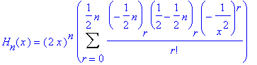
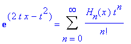
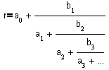
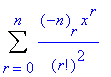
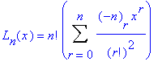
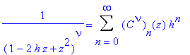
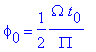
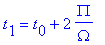
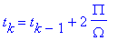

| Difference Equations and Recursive Relations index | History Topics Index |
y" - 2xy' + 2ny = 0
where n is a constant, not necessarily an integer. Hermite functions is the solutions of an equation related to Hermite's equations. By the method of solution in series, the general solution of Hermite's equation is
y(x) = c1y1(x) + c2y2(x)
where c1 and c2 are arbitraty constants and the functions y1(x) and y2(x) are defined by the equations
y1(x) = 1 - 2 n/2! x2 + 22n(n-2)/4! x4 - 23n(n-2)(n-4)/6! x6 + ...
y2(x) = x [ 1 - 2 (n-1)/3! x2 + 22(n-1)(n-3)/5! x4 + ...].
In solutions of the Hermite equation, when n
is a positive integer; it then has a polynomial solution.
If n is an even integer
n, we take
c1=(-1)1/2n n!/(1/2n)! (c2=0)
y=Hn(x)

with (a)r=a(a+1)... (a+r-1). On the other hand, if n is an odd integer, we take
c1=0, c2=(-1)1/2n-1/2n!/[(1/2n-1/2)!]2
to obtain the same solution. The polynomial Hn(x) is
called the Hermite
polynomial of degree n.
The Hermite polynomial is
From this defintion it can be deduced that

and satisfies the recurrence relations
2xHn(x)=2nHn-1(x)+Hn+1(x)

If r is a rational number this expansion terminates. If r is an irrational number this expansion never terminates.
VisitChristoffel
Number
where n is a constant but not necessarily an integer. In the special case in which the parameter v occurring in the Laguerre equation is a positive integer n, the solution y1(x) reduces t the polynomial

so that the polynomial

is a solution of
The polynomial Ln(x) is called the Laguerre polynomial of degree n. The first five are:
The formula of Rodrigue's type is
Ln(x) = (ex) dn / dxn (xne-x)
The L(x) satisfy the recurrence relations
Ln+1(x) + (x-2n-1)Ln(x) + n2Ln-1(x) = 0,
L'n(x) - nL'n-1(x) + nLn-1(x) = 0
If you like to view the Tower of Hanoi click here.

,It has the series expansion
The Gegenbauer polynomials satisfy this differential equation
(1-z2)w" - (1+2n)zw' + n(n+2n)w = 0
x = x(t) and y = y(t)
x' = f(x,y) and y' = g(x,y).
For differential equations of the type under consideration, it is easy to implement the method of Poincare sections. In general, the difficulty is to find a suitable surface which the orbit must pierce repeatedly; for a periodically driven system the phase plane provides such a surface. It is pierced once, and once only, for each value of the time, allowing us to record the positions at a convenient sequence of times.
Phase of section - Given an initial time t0, the corresponding phase of section is given by

, mod 2p,meaning that f0
is reduced by an integer multiple of 2p so as
to lie in the range x in [0,2p].
Poincare sections-Given a phase of section f0,
the orbit of the map
(x0,y0) therefore (x1,y1) therefore . . . (xk,yk) . . .
generating by sampling positions in the phase plane at the sequence of times
t=t0
therefore

. . .therefore

. . .is a Poincare section of the corresponding orbit of the differential equation.
Visit Poincare
Recurrence Theorem
Tn(x)=cos(n cos-1 x), x in [-1,1],
which, on putting x=cosq, q in [0, p], is seen to be equivalent to the relation
Tn(cos q)=cos nq, q in [0, p].
Chebychev polynomials of the second kind are defined by the equation
Un(cos q) = sin (n+1)q / sinq, cos q =x, x in [-1,1].
The two kinds of the polynomials are connected by means of the relations
Tn(x) = Un(x)-xUn+1(x)
(1-x2)Un-1(x) = xTn(x)-Tn+1(x)
The Chebychev polynomial of the first kind of degree n satisfies the differential equation
(1-x)d2y/dx2 - x(dy/dx) + n2y = 0
and that of the second kind satisfies the equation
(1-x)d2y/dx2 - 3x(dy/dx) + n(n+2)y = 0
The relation
connects three consecutive Chebychev polynomials,
where zn is either Tn(x) or Un(x).
If primes denote differentialtion with respect to x, then
| [n/2] |
| Tn(x) =(n/2) S (-1)m (n-m-1)!/(m! (n-2m)!) (2x)n-2m |
| m=0 |
| [n/2] |
| Un(x) = S (-1)m (n-m)!/(m!(n-2m)!) (2x)n-2m |
| sm=0 |
If you would like to view an example of Peano's Space Filling Curve click here.